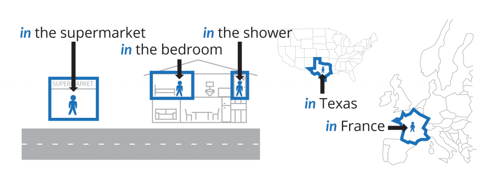
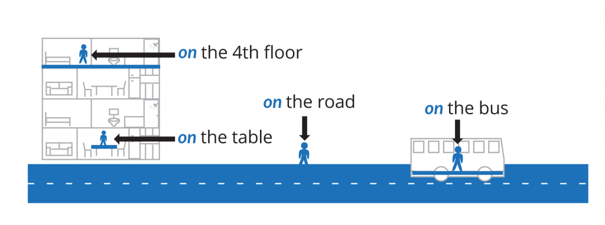
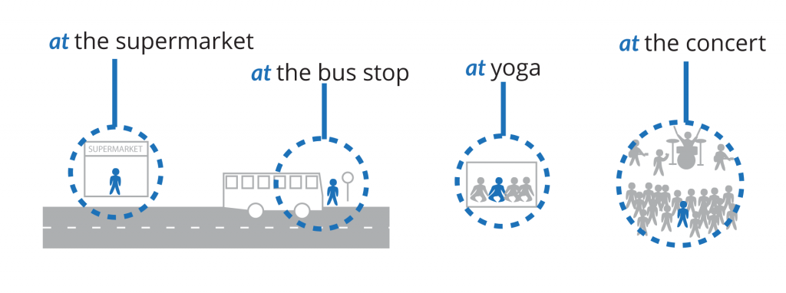
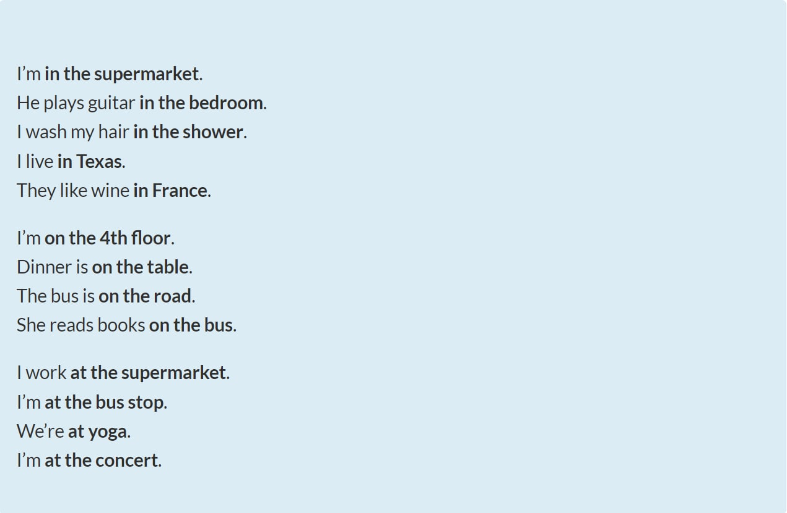
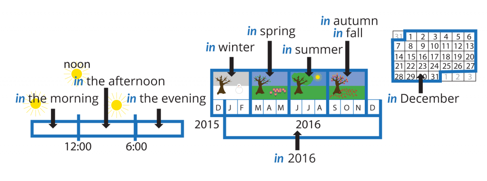
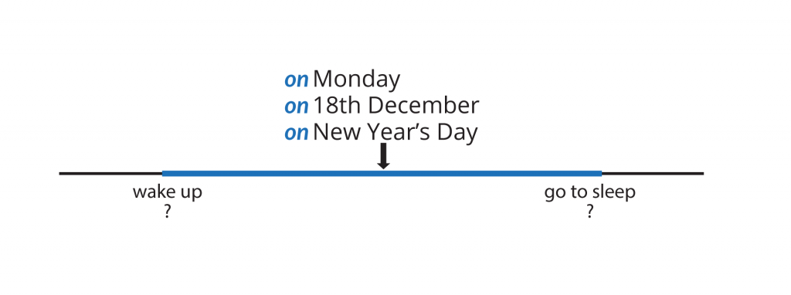
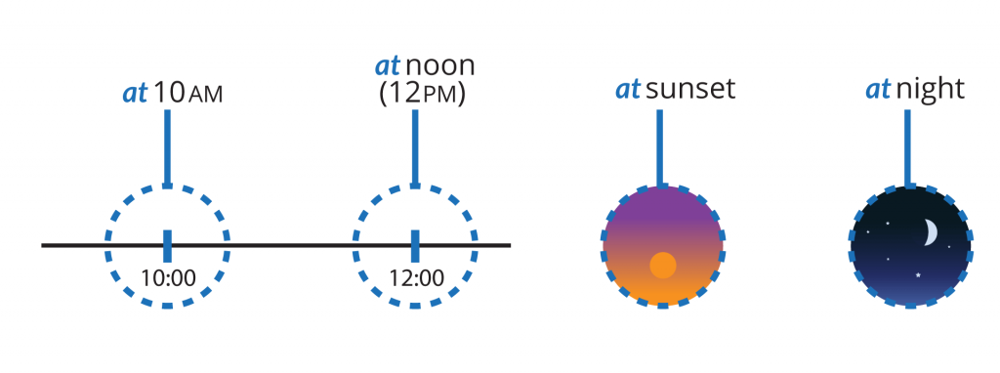
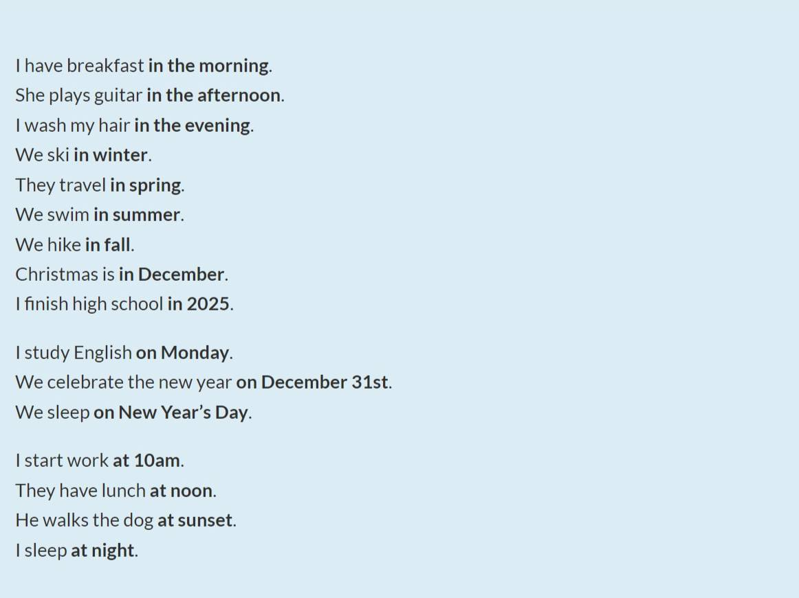
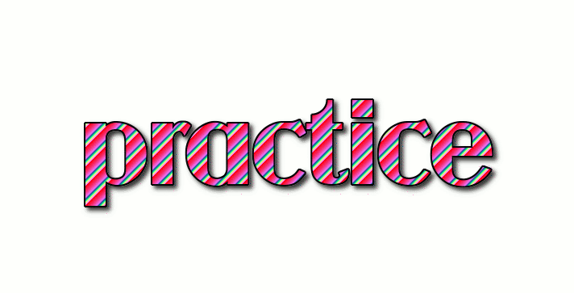

in / on / at
Prepositions of place and time
The prepositions in, on, and at are very common English words. They are used when talking about a place or time. They have basic meanings and can be used in a wide range of situations.
So first, what do they mean?
Where? Adding a place
- in a boundary: Where the area starts and ends IS important. 
- on a surface: Where the area starts and ends IS NOT important. 
- at point in space
- at an event
Examples: saying where
Look at these examples and visualize where.
When? Adding a time
We can't see time, so we visualize when the same way as we visualize where.
We use in, on, and at to say when something is or happens.
- in: When the period of time starts and ends IS important. 
- on: When the period of time starts and ends IS NOT important.
(We think of a day as being the time from when we wake up to the time we go to sleep. Exactly when a person wakes up and goes to sleep is not important.)
 - at a point in time.
- at an event in time. 
Examples: saying when
Look at these examples and visualize when.
 